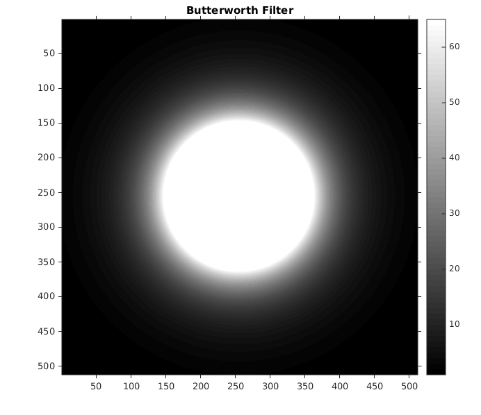

Contents
MyMainScript
tic;
Setting global data
curDir = pwd;
Input files
boat_file = fullfile(curDir, '..', 'data', 'boat.mat');
Loading inputs
load(boat_file);
boatOrig = imageOrig;
Noisifying
boatNois = myNoisify(boatOrig);
Contrast Stretch Params (If required)
minOrigI = min(boatOrig(:));
maxOrigI = max(boatOrig(:));
Other Params
dopt = 83;
nval = 2;
Applying Butterworth
boatFreq = fft2(boatNois);
boatFreq = fftshift(boatFreq);
[boatTranF, b_filter] = myButterworthFiltering(boatFreq, dopt, nval);
boatTranFS = ifftshift(boatTranF);
boatTran = ifft2(boatTranFS);
RMSD Values
filtered_0 = myButterworthFiltering(boatFreq, dopt, nval);
rmsd_0 = abs(myRMSD(filtered_0, boatOrig))/1000;
disp(['RMSD for Dopt = Dopt is ' num2str(rmsd_0)]);
filtered_1 = myButterworthFiltering(boatFreq, dopt*0.95, nval);
rmsd_1 = abs(myRMSD(filtered_1, boatOrig))/1000;
disp(['RMSD for Dopt = Dopt*0.95 is ' num2str(rmsd_1)]);
filtered_2 = myButterworthFiltering(boatFreq, dopt*1.05, nval);
rmsd_2 = abs(myRMSD(filtered_2, boatOrig))/1000;
disp(['RMSD for Dopt = Dopt*1.05 is ' num2str(rmsd_2)]);
RMSD for Dopt = Dopt is 65.8997
RMSD for Dopt = Dopt*0.95 is 65.8997
RMSD for Dopt = Dopt*1.05 is 65.8999
Display Images
figure('Name', 'Boat Original'),
imshow(boatOrig, []), colorbar, truesize;
title('Boat Original');
figure('Name', 'Boat Noised'),
imshow(boatNois, []), colorbar, truesize;
title('Boat Noised');
figure('Name', 'Boat Transformed'),
imshow(abs(boatTran), []), colorbar, truesize;
title('Boat Transformed');
figure('Name', 'Butterworth Filter'),
imshow(b_filter, gray), colorbar, truesize;
title('Butterworth Filter');

Energy Filtering Analysis
boatFreqTemp = fft2(boatOrig);
boatFreq = fftshift(boatFreqTemp);
energy100 = sum(sum(abs(boatFreq).^2));
radii = [1.5 2.2 4.5 14.1 59];
energies = [88 91 94 97 99];
[rows, cols] = size(boatFreq);
for k=1:5
in_radius = radii(k);
filter_mask = zeros(rows, cols);
for i = 1:cols
for j = 1:rows
dist = sqrt((i-cols/2)^2 + (j-rows/2)^2);
if (dist < in_radius)
filter_mask(i,j) = boatFreq(i,j);
end
end
end
boatInvFS = ifftshift(filter_mask);
boatInv = ifft2(boatInvFS);
boatInv = abs(boatInv);
rmsd = myRMSD(boatOrig, boatInv);
out_energy = sum(sum(abs(filter_mask).^2));
disp(['for ' num2str(energies(k)) '%, radius = ' num2str(in_radius) ' calculated energy % = ' num2str(out_energy*100/energy100) ' and RMSD = ' num2str(rmsd)]);
end
toc;
for 88%, radius = 1.5 calculated energy % = 90.5633 and RMSD = 40.0994
for 91%, radius = 2.2 calculated energy % = 90.6931 and RMSD = 39.7015
for 94%, radius = 4.5 calculated energy % = 94.1009 and RMSD = 32.6919
for 97%, radius = 14.1 calculated energy % = 97.0273 and RMSD = 23.4786
for 99%, radius = 59 calculated energy % = 99.0074 and RMSD = 13.6692
Elapsed time is 10.379030 seconds.